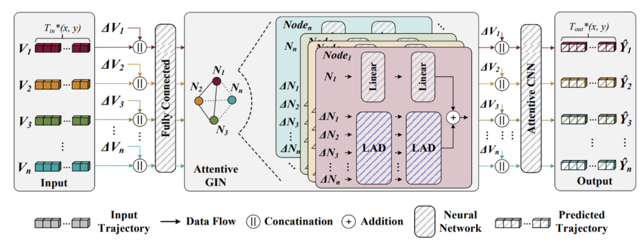

Research Project
Highway Workzone Safety

Project Overview
An edge-AI pipeline engineered to monitor active highway workzones, forecast vehicle trajectories, and surface anomalies before they turn into incidents.
The system fuses roadside sensing with lightweight models that can run directly at the edge, enabling real-time alerts for field crews without relying on constant cloud connectivity. Insights help transportation partners evaluate mitigation strategies and prioritize operator safety.
Pipeline Focus
- Edge-deployable multi-modal sensing stack
- Trajectory forecasting tuned for congested corridors
- Anomaly detection calibrated for workzone operations
Deployment Goals
- Predictive risk alerts for on-site crews
- Data products ready for DOT-scale integrations
- Resilient performance with intermittent connectivity
Project Partners

UNC Charlotte

University of Minnesota
NSF (Research Partner)
Funding
NSF
National Science Foundation
Related Publications
- Deeptrack: Lightweight deep learning for vehicle trajectory prediction in highways (IEEE, 2022)
- Pishgu: Universal path prediction network architecture for real-time cyber-physical edge systems (ACM, 2023)
- VT-Former: Vehicle trajectory prediction for highway surveillance (CVPR Workshops, 2024)
- POV-based highway vehicle trajectory dataset and prediction architecture (IEEE, 2024)
- Pishgu: Universal path prediction architecture through graph isomorphism and attentive convolution (arXiv, 2022)
- VegaEdge: Edge AI confluence for real-time IoT applications in highway safety (Elsevier, 2024)